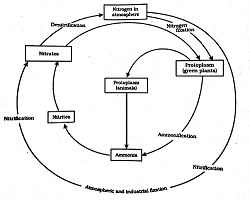
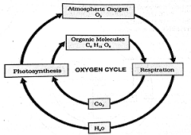

Atmosphere and Climate
The major components of the planet Earth can be divided into water, land, and air. The land surface known as lithosphere. Water covers about 75% of the Earth's surface and is called hydrosphere. Air which covers the water and land, is known as atmosphere. These are the abiotic (non-living) components. the abiotic components interact with the biotic (living) components in the biosphere.
Effect of atmosphere on life on Earth
We know that the position of the Earth in the solar system and its distance from sun helps in maintaining the temperature of the Earth and thus supporting life. Moon too is located at the same distance from sun as the Earth. Yet, life does not exist on moon. The moon has extreme temperatures, which ranges from about \( "190^{\circ} C
to \ 110^{\circ}C, \) although it is located at a similar distance from sun as the Earth. However, the Earth maintains a moderate range of temperature. This is because the Earth has an atmosphere and moon does not.Atmosphere is a mixture of gases. It is basically a mixture of nitrogen, oxygen, carbon dioxide, water vapour, and hydrogen.
How does atmosphere maintain the temperature?
Air is a bad conductor of heat. During the day, it resists the heat from entering the Earth and at night, it does not allow the heat to escape from the Earth.
Thus, the atmosphere does not allow a sudden increase in temperatures during the day and a sudden decrease in temperatures at night. This helps to maintain a moderate temperature, which is essential for life.
Formation of Wind and Rain
We can feel the presence of air although we cannot see it. We are able to see the trees and plants move due to the moving air. This movement of air is called wind.
Wind can be defined as the air which moves horizontally over the surface of the Earth.
Formation of Wind
Wind is formed as a result of the differential heating of the atmosphere.A portion of the solar radiation that reaches the Earth's surface is radiated back into the atmosphere. This heats up the atmosphere. The extent of this heating varies across land and water.
How does differential heating lead to the formation of wind?
During the day, solar radiations heat up the land surface. This causes the air over land surface to heat up.
The hot air expands and rises upwards. This vertical movement of air is known as convection current.
A low pressure area is thus created over land surface. The solar radiations do not heat up water as fast as they heat up land. This is because water takes a longer time to heat up as compared to land.
Therefore, during the day, when the air over the land surface is heated up, the air over the water surface is relatively cooler. This creates a high pressure area over the water surface.
When the hot air over the land surface rises up, it creates a vacant space. This vacant space in the low pressure area (over the land) is occupied by the air present in the high pressure area (over the water). Thus, the air over the water surface starts blowing towards the land surface during the day.
During the night, this situation gets reversed.
The land surface cools down much faster as compared to the water surface. Therefore, the air over land is cooler in comparison to the air over water. A high pressure area is thus created over the land surface and a low pressure area prevails over the water surface.
This causes wind to blow from the land surface towards the water surface during the night. The given animation explains the process of land breeze and sea breeze.
Did you know that hot air always moves upwards?
Smoke is always seen rising upwards! This is because fire heats the air around it. The heated air moves upwards, carrying along burnt carbon particles that we observe as smoke.
Important Characteristics of Wind
-
Wind blows from a high pressure area to a low pressure area.
-
A region with a high temperature has low pressure as hot air moves up, thereby creating a vacant space in that area.
-
During the day, wind blows from sea to land. This is known as sea breeze.
-
During the night, wind blows from land to sea. This is known as land breeze.
-
The other factors that influence the formation of winds are the rotation of the Earth and the presence of mountain ranges.
Formation of rain
When the air over the land and water body heats up, water gets converted into water vapour and rises along with the air. Water vapour cools down at lower temperatures and starts condensing. This leads to the formation of clouds. Millions of tiny water droplets in the clouds keep growing in size. When these drops become so large that they can no longer be held in the clouds, they fall down as rain.Thus, during precipitation, water vapour forms rain drops.At lower temperatures, rain freezes and precipitates as snow, hail, or sleet.
Important of water
Water is a colourless, odourless and tasteless liquid that covers over 70% of the Earth's surface. It is present in rain, clouds and the seas. Water is not only all around us, but it is inside us as well. On an average, the human body contains almost 65% of water. Some foods are almost all water. For example, a ripe tomato consists of nearly 95% water.
Role of Water in the Human Body
-
Water is a medium of transport of chemicals to and from cells.
-
Metabolic reactions occur in water.
-
Water regulates the temperature of the body by the process of sweating and evaporation.
-
Blood a colloidal solution of many compounds such as salts, proteins, enzymes, glucose etc, in water.
Role of water In plants
-
Germination of seeds:Water helps in the germination of seeds.
-
Photosynthesis:Along with carbon dioxide, plants use water for manufacturing food.
-
Transport of minerals:Minerals present in the soil dissolve in the water and form a solution. This solution is then absorbed by the roots and conducted upwards through the plant tissues.
Importance of sea water
Extraction of Common Salt from Sea water:
-
In warm climate, seawater is evaporated in large shallow ponds called sea pans or meadows by the heat of the sun. Sea water is pumped into these pans. On evaporation, salt is left behind. This salt is called solar salt.
The slower the evaporation takes place, the larger are the crystals obtained in the pan. The mother liquor obtained after the removal of common salt crystals is called bitters and it contains magnesium salts and bromides of the sea water.
-
Sea provides the biggest habitat for living organisms. The majority of Earth's producers and consumers live in sea water. Phytoplankton comprising sea algae and sea plants are the major producers while zooplanktons, protozoans, crabs, fishes, sea snakes, sea turtles, crocodiles and sea birds are the primary consumers in sea water.
Reasons for life in sea water:
-
Sunlight can easily pass through sea water, helping water plants to carry on photosynthesis.
-
Temperature variation in the sea is mild. Thus, there is no threat to the life of these life forms when the weather changes.
-
Sea water contains dissolved oxygen, which is utilized by animals and plants for respiration.
-
Sea water contains dissolved carbon dioxide, a vital substance to carry out photosynthesis to produce food for sea plants.
-
Sea plants and animals require traces of salts and minerals containing nitrogen, phosphorus, potassium etc, for their growth. These minerals are provided by sea water.
The mystery of dead sea
The dead sea is a terminal lake with no outlet, meaning water can only leave through evaporation. Water from its surrounding tributaries flow in to the dead sea. Bringing with them all sorts of minerals, including salts. Since, there is no outlet, the water evaporates depositing minerals and salts. This is the basic reason why dead sea has such high concentration and thus life cannot sustain in it.
Occurrence of Water
Water is widely distributed in nature in all the physical states. It is found in the combined states in certain minerals and crystalline substances.
In solid state
It occurs as ice, snow and hails stones in Polar regions and mountainous areas of the Earth. As the temperature rises during summer, some amount of these forms melt down.
In liquid state
Water in the liquid state covers about three-fourth of the surface of the Earth. The volume of water in ocean is estimated to be \( 3 \times 10^{18} \) cubic metres.
In gaseous state
A large amount of water is present in the form of vapours in the atmosphere. This water plays a vital role in sustaining life in plants and animals. A dry weather (without moisture) is injurious to plant and animal tissues.
Note:
Water is the only substance that can exist in all three states (solid, liquid, gas), at ordinary temperature and pressure.
Formation and Importance of soil
soil is formed by the process of weathering during which rocks breaks down to form soil particles. This breaking down of rock occurs over a period of millions of years. Weathering can be physical, chemical, and biological.
Role of sun in Soil formation
During the day,sunlight heats up the rocks on the Earth's surface and during the night, it cools them down. Rocks expand when heated and contract when cooled down. This repeated heating and cooling of rocks causes them to break down into smaller particles.
Role of Water in Soil formation
Water too aids in the process of soil formation. It enters the rocks through the cracks in them and freezes at lower temperatures. This expands and contracts the rocks, which results in the breaking down of the rocks. Another way in which water helps in the formation of soil is when running water flows along rocks. The flow of water along the rocks creates a friction between water and rocks, which results in the weathering of rocks. This leads to the formation of soil. The soil thus formed may flow along with the water and get deposited elsewhere.
Role of winds in Soil formation
Strong winds wear down or erode rocks. They carry soil particles thus formed and deposit them at places where the winds slow down.
Role of living organisms in Soil formation
Living organisms also help in the formation of soil. Mosses and lichen break down the surface of rocks due to the action of the chemicals that they release. The roots of plants also help in the breaking down of rocks. These roots enter the rocks through the cracks in them. In course of time, as they expand and grow, they cause the break down of rocks into smaller pieces.
Thus, soil formed from rocks. In other words, soil contains rock particles.
Components of Soil
One important component of soil is the organic component comprising the dead and decaying leaves, parts of plants, and animals. This organic material decomposes to form humus, which determines the fertility of the soil. It is porous in nature and allows water to pass through it. The parent rock of the soil determines its mineral component.
Humus and the nutrient content of the soil are important factors in determining the type of plant that the soil can support. Since these factors are present in the topmost layer of the soil, it is this topsoil that essentially decides the type of plant or animal life that it can support.
Can we alter the nutrient and humus content of the soil to support plant life?
It is possible to increase the nutrient and humus content of the soil by using manures and fertilizers. Manures are naturally decomposed organic materials that increase soil fertility. Fertilizers are either natural or chemical in nature and add essential nutrients to the soil. The use of fertilizers is a common practice in agriculture.
Threat to Soil
Most fertilizers and pesticides are made of chemicals. Excessive use of fertilizers and chemicals can kill the natural microorganisms present in soil. It also affects earthworms, which help in the conversion of organic matter into humus. If the use of fertilizers and pesticides not controlled, then soil may lose its harmful substances that affect the useful components present in the soil, is called soil pollution.
Loss of the valuable topsoil during rains is another threat to soil. This process is called Soil erosion.soil takes millions of years to form and it can be washed away by wind or water in no time. Plants do not grow in eroded regions because of the absence of nutrients and humus. Soil erosion thus results in loss of plant life and converts previously fertile land into barren land.
Prevention of Soil erosion
Plant roots help in holding the soil and preventing erosion. Therefore, plants play a very important role in maintaining the quality of topsoil. Since topsoil is difficult to recover, planting trees should be encouraged and deforestation should be avoided.
Biogeochemical Cycles
We know that plants absorb nitrogen from the soil. Assuming that all plants do so, the nitrogen in soil should have been completely exhausted by now. However, this is not the case.
Similarly, organisms breathe-in oxygen and breathe-out carbon dioxide. If all organisms inhale oxygen from the atmosphere and exhale carbon dioxide, then the atmosphere should be left with only carbon dioxide, as all the oxygen should have been exhausted. However, once again, this is not true!
To maintain the concentrations of substances in the environment, there should be a mechanism to constantly recycle these substances. These recycle mechanisms are called biogeochemical cycles.
Some important biogeochemical cycles are as follows.
-
Water cycle
-
Nitrogen cycle
-
Carbon cycle
-
Oxygen cycle
The water cycle
To understand the water cycle, we should know
-
how water is lost from the environment
-
the processes of change and the different states of water
-
the method by which it is returned to the environment
Water molecules change into water vapour and move into the atmosphere by the process of evaporation.
The excess water absorbed by plant roots is released through the pores on the surface of leaves by the process of transpiration.
The process by which water vapour rises up, cools down in the higher atmosphere, and form clouds is called condensation.
As Condensation Proceeds, water vapour changes into water droplets. When enough water droplets accumulate, they fall down as rain. This process is called precipitation. The rain replenishes the water in the lakes, ponds, oceans, and other water bodies. The process of rain water thus entering the soil is known as infiltration. When rain water flows over the surface of land before entering the water bodies, it is called surface runoff
very low temperatures water freezes and falls down as hail, snow, or sleet.
The process of water cycle is depicted in the given animation.
The nitrogen cycle
To understand the nitrogen cycle, we should know
-
where nitrogen is present in the environment
-
which organisms utilize nitrogen and how they do so
-
how the utilized nitrogen returns to the environment
In the atmosphere, the concentration of nitrogen is about 78%. It is essential for plants. Nitrogen forms a structural component of many important molecules such as DNA, RNA, and other vitamins.
Plants cannot absorb nitrogen from the atmosphere. So, how is atmospheric nitrogen utilized by plants?
There are methods that change atmospheric nitrogen into usable forms through the process of nitrogen fixation. Two such methods are given below.
-
During lightning and thunder, the high temperature and pressure in the air convert atmospheric nitrogen into oxides of nitrogen that can dissolve in water to produce nitric and nitrous acids. These fall along with rain.
-
Certain forms of bacteria are able to convert atmospheric nitrogen into usable forms such as nitrates and nitrites. Such nitrogen fixing bacteria are commonly found in the roots of legumes (plants of pulses) inside special structures called root nodules.
These usable forms of nitrogen are absorbed by plants to produce many compounds such as amino acids, which in turn form proteins.
When an animal feeds on plants, nitrogen enters its body.

How does nitrogen return to the environment?
When plants and animals die, they start decomposing after some time. During this process, proteins are converted into nitrates and nitrites by the action of decomposing bacteria. Certain other forms of bacteria convert nitrates and nitrites into elemental nitrogen. Thus, nitrogen flows between the various components of the biosphere in a cyclical manner.
The carbon cycle
To understand the carbon cycle, we should know
-
where carbon is present in the environment
-
how carbon is utilized
-
how the utilized carbon returns to the environment
Carbon is present in the environment in many forms. Graphite and diamond are the elemental forms of carbon. In the atmosphere, carbon is present as carbon dioxide. Mineral forms of carbon include carbonates or hydrogen carbonates.
All organic substances are made up of carbon. Fats, vitamins, nucleic acids, carbohydrates, and proteins contain carbon as a structural component. Carbonate salts form endoskeletons and exoskeletons of many animals.
Carbon enters life forms through the process of photosynthesis. Photosynthesis is the process by which plants prepare food in the presence of sunlight and chlorophyll. During photosynthesis, carbon dioxide and water combine to produce glucose and oxygen. This changes the atmospheric carbon into glucose molecules.
Glucose, which is a source of food, is utilized by organisms to produce energy during respiration. During this Process, glucose is broken down in the presence of oxygen to produce carbon dioxide.
Thus, through the processes of photosynthesis and respiration, carbon is utilized and then returned to the environment.
All organisms do not require oxygen to break down glucose and produce energy. The organisms which survive in the absence of oxygen are called anaerobes.
Another process that releases carbon dioxide is called combustion.It is the process of burning. Many substances release carbon dioxide on burning. Vehicular emissions, industrial fumes, and the gases released during the process of cooking are some instances during which carbon dioxide is released.
The oxygen cycle

Oxygen is an important component of everyday life. We cannot survive without oxygen. It comprises about 21% of atmospheric air. It is a component of several biological molecules such as carbohydrates, proteins, nucleic acids, and fats.
Similar to carbon dioxide, oxygen too is cycled through the process of photosynthesis and respiration. Oxygen is also utilized during combustion or burning.
Air Pollution
Sources of Air Pollution
Air is everywhere around us and we all need clean air for breathing. But did you know that as a result of the addition of some substances to air, it is increasingly becoming toxic for living organisms?
The contamination of air with unwanted substances, which have harmful effects on both plants ants animals, is known as air pollution.
The substances that cause the contamination of air are called air pollutants. There are two source of air pollution are:
-
Natural sources and
-
Man-made sources.
Natural sources
You may have seen on television that during the summer season some forests catch fire. These fires are caused when, as a result of high temperatures, dead plant materials such as barks, twigs, and leaves, which are lying on the forest floor, start burning. These fires emit large amounts of smoke into the atmosphere, there by polluting the air.
The other natural source of air pollution is volcanoes. Volcanoes emit large amounts of harmful gases and dust particles into the atmosphere, thus contributing to air pollution.
Man-made sources
Although natural sources contribute to air pollution, did you know that human activities contribute the most toward air pollution?
Human activities that cause air pollution include emissions from power plants, automobile exhausts, and factories; burning of fossil fuels and firewood, etc.
Let us now explore various air pollutants and their sources.
-
Carbon monoxide
Carbon monoxide is a toxic, colourless gas. It is produced by the incomplete burning of fossil fuels. It is mainly produced by vehicles.
-
Smog
Smog is formed by the combination of smoke and fog. It is a highly noxious mixture of pollutants that affects the health of living organisms. Smog is a common winter phenomenon in a large number of modern day cities such as Delhi.
-
Oxide of sulphur and Nitrogen
Sulphur dioxide and nitrogen dioxide are major oxides of sulphur and nitrogen that act as pollutants. These are released from petroleum refineries and also from power that use coal as a fuel.
-
Chlorofluorocarbons
Chlorofluorocarbons are also known as CFCs. They are used in refrigerators, air conditioners, and aerosol sprays. They cause damage to the ozone layer in the atmosphere.
-
Suspended Particulate Matter(SPM)
There are tiny particles that are produced on the burning of coal and petroleum.They are also released during industrial processes such as mining and making of steel.
Effects of Air Pollution On Living Organisms
Air pollution has significant health effects on all living organisms including human beings.
Various air pollutants cause diseases that range from skin cancers to respiratory disorders. Let us examine in detail the effect that each pollutant has on living organisms.
-
Carbon monoxide
Carbon monoxide is pollutant that is released as a result of the incomplete burning of fuel s such as diesel and petrol. What effect does carbon monoxide have on the health of humans?
Carbon monoxide combines with haemoglobin, which is present in the red blood cells, and decreases the oxygen-carrying capacity of blood.
-
Sulphur dioxide
Sulphur dioxide is a pollutant that is produced during the combustion of fuels such as coal. It causes many respiratory problems such as cough and throat irritation when inhaled in small amounts. Continuous exposure to sulphur dioxide may cause permanent damage to the lungs.
-
Nitrogen dioxide
Exposure to nitrogen dioxide causes damage to the lungs apart from other respiratory disorders.
-
Smog
Some of you may have seen a thick fog-like layer in the atmosphere during the winter months. This is smog. Smog is formed when smoke mixes with fog.
Smog is made up of many air pollutants such as the oxides of nitrogen. It causes breathing difficulties such as asthma, cough, and wheezing among children.
-
Chlorofluorocarbons(CFCs)
Chlorofluorocarbons are responsible for damaging the ozone layer and have led to the formation of the ozone hole in the atmosphere. A rapidly depleting ozone layer allows the harmful UV radiations of the sun to reach the Earth, which is responsible for an increase in the cases of skin cancers.
-
Suspended particles
Suspended particles are tiny particles that are produced because of the burning of fossil fuels. They trigger many respiratory diseases such as asthma and sneezing when inhaled.
The hair present in the nostrils prevents the suspended dust particles from entering our lungs. However, some dust particles are so small that they cannot be trapped in the nostrils and they enter the respiratory system.
Effects of Air Pollution On Non-Living Objects
All of us have seen the TajMahal, either in reality or in pictures. Did you know that the TajMahal is in danger because of rising air pollution levels?
Taking the TajMahal as a case study, let us explore how air pollution affects non-living objects such as buildings and monuments. The industries present around the TajMahal, especially the Mathura oil refinery, are primarily responsible for the damage caused to the monument.
Acid rains are very harmful. These rains cause widespread damage to several materials and property, especially to monuments, which undergo heavy corrosion as a result of these rains. Acid rains have corroded the marble of the Taj Mahal, a phenomenon also known as Marble-cancer.
This particulate matter released from Mathura oil refinery is responsible for the yellowing of the marble of the Taj Mahal.

What are we doing to protect the Taj Mahal or other monuments from the harmful effects of air pollution? Let us find out
The Supreme Court of India has taken many steps in the direction of protecting the taj mahal from pollution. It has directed the industries around the Taj Mahal to use cleaner fuels such as LPG(Liquefied petroleum Gas) and CNG (Compressed Natural Gas). In addition, all vehicles have been ordered to switch-over to unleaded petrol. CNG and LPG are clean fuels. Hence, they do not produce soot on burning.
Water Pollution
The addition of harmful substances to water which causes its physical, chemical and biological properties to change is Called Water pollution.
The substances that pollute water are called water pollutants. Sewage toxic chemicals silt etc, are examples of Water pollutants.
Sources of water pollution
All of you are aware that Ganga is one of the most important holy rivers of India. In supports the lives of millions of people living in the northern plains. According to a study by the WWF, Ganga is one of the ten most endangered rivers.
The river Ganga is Practically dead at many places. This is because the pollution levels in the river are so high that it cannot support any life form. The portion of the river that flows through the city of Kanpur is a stretch that is completely dead.
The factors that have contributed to the increase in the pollution levels of the river are
-
Dumping of large quantities of garbage into the river
-
Releasing of untreated sewage water into the river
-
Throwing of dead bodies into the river.
-
Washing, bathing, and defecating near the shores of the river.
-
Throwing flowers and idols of gods and goddesses into the river
-
Dumping non-biodegradable substances such as polythene bags into the river
These are common factors that are responsible for polluting the rivers of our country. In addition, factories manufacturing fertilizers, detergents, leather goods, and paints that are located near a river, throw their industrial wastes and toxic chemicals into the river. This makes the water of the river unfit for use by living organisms.
In order to address all the above mentioned problems, the Ganga Action Plan was launched in the year 1985 with the purpose of reviving the river. However, unplanned urbanisation and industrialization has taken its toll on the river and it has been damaged beyond repair.
Effects of Water Pollution on Living Organisms
-
Industrial waste:
In the absence of proper treatment facilities for industrial wastes, most of these wastes are directly dumped into the rivers. The industrial wastes from oil refineries, chemical factories, sugar mills, and fertilizer plants carry toxic substance such as arsenic, lead, mercury, and fluoride. These substances cause toxicity in plants and animals.
They also pollute the soil by increasing its acidity, decreasing its fertility, and affecting the growth of worms whiCh are beneficial for the soil.
-
pesticides and fertilizers
We know that fertilizers and pesticides are a farmer's friend as these help in killing the pests and weeds and increasing the fertility of the soil. The chemicals that are contained in these pesticides and fertilizers get dissolved in the water and eventually get washed away to the water bodies. They also seep into the ground and pollute the ground water.
On entering the water bodies, these pesticides and fertilizers increase the nutrient content of the soil as they contain various nutrients. This accelerates the growth of algae in the water bodies. You may have observed that some bodies appear green in colour. This because of the excessive growth of algae in water.
When these algae die, they are decomposed by the action of micro-organisms that are present in water. Consequently, the number of these micro-organisms in water bodies increases. Since they consume a large quantity of oxygen that is present in the water, it leads to a decrease in the levels of oxygen. The absence of oxygen eventually leads to the death of the living organisms.
-
Sewage
Sewage is waste water that contains faecal matter, urine, food wastes, detergents, and other solid substances. Sewage contains many disease-causing pathogens such as bacteria, fungi, viruses, and parasites. When drinking water gets contaminated with sewage water, these harmful organisms enter the bodies of the living organisms and cause several diseases. Some of the diseases caused by the drinking of contaminated water and the names of the respective causal organisms are listed in the table.
| Name of the ase |
Causal organism |
| Cholera |
Bacteria |
| Typhoid |
Bacteria |
| Diarrhoea |
Bacteria |
| Hepatitis |
Virus |
| Amoebic dysentery |
Protozoan |
Several bacteria are present in the faeces of mammals. If the water is contaminated with faeces, then these bacteria function as indicator organisms for the quality of water i.e., the number of these faecal bacteria indicates the extent to which the water is contaminated by faecal matter.
Conservation and Purification Of Water
Water is a precious resource and we need to conserve it. Water can be conserved by following the simple principle of reduce, reuse, and recycle. This can be practiced easily at homes. Some examples are
-
Reusing the waste water from the kitchen (water that has been used to wash vegetables etc.) to water the plants in the garden
-
Reusing the water after washing clothes to wipe the floor or to clean the car
-
Turning the tap off while brushing or shaving
-
Checking for leaky taps and fixing them up
Thus, we can reduce the total amount of water consumed by us by recycling and reusing most of the waste water for other purposes.
The waste water from industries first needs to be treated in sewage treatment plants. This water can then be used for growing plants and other industrial purposes.
Purification of water
Potable water is the water that is safe for drinking. Although the water may look clean on more observation, it may contain disease-carrying micro-organisms. In order to prevent the occurrence of diseases, this water has to be cleaned and only then can it be used safely for drinking.
Methods to purify water
-
Physical methods
-
Filtration:It is one of the common methods used for removing impurities from water. A simple filter paper can be used to obtain clean water. Candle-type filters that are commonly used in households are also based on the principle of filtration.
-
Boiling: Boiling the water helps in killing the germs present in water.
-
Chemical methods
-
ChlorinationAdding Chlorine to water is one of the most commonly used methods of purifying water. Chlorine, when used in the prescribed amount, kills the germs present in water and makes it safe for consumption. you may have observed that tap water sometimes appears milky. This is because it contains chlorine.
-
Adding bleaching Powder helps in purifying
Greenhouse Effect
Have you seen a greenhouse in a nursery where plants are kept? A greenhouse is a structure that traps the sun's heat and does not allow it to escape. This provides a warm atmosphere for the plants to grow.

We know that the sun's rays keep the Earth's surface warm. Some of the solar radiation is absorbed by the Earth, while a part of it is reflected back into space. This reflected radiation is trapped by the atmosphere of the Earth. This phenomenon, which imitates the greenhouse of a nursery, is known as the greenhouse effect.
How does the greenhouse effect affect our environment?
There are a few gases in the atmosphere that aggravate the greenhouse effect. These gases are called greenhouse gases. The levels of these gases in the atmosphere have increased as a result of increasing pollution levels. Carbon dioxide is one of the gases that cause the greenhouse effect.
Carbon dioxide \( (CO_2) \) is a natural component of the atmosphere. How can a natural part of the Earth pose a threat to life?
All of us know that plants absorb carbon dioxide from the atmosphere to synthesize their own food through the process of photosynthesis. However, as a result of deforestation, the number of trees has gone down drastically.
This has reduced the uptake of carbon dioxide by trees, which in turn has led to an increase in its concentration in the atmosphere. The burning of fossil fuels further adds to the carbon dioxide levels in the atmosphere. As a result, more and more solar radiation is being trapped in the atmosphere, thereby leading to an increase in the Earth's temperature. This warming-up of the Earth is termed as global warming. Other gases such as methane, nitrous oxide, and water vapour also contribute to the greenhouse effect.
What are the likely consequences of global warming?
Global warming will result in extreme temperature conditions. There will be changes in the precipitation patterns that may lead to floods and droughts. The water trapped in the ice caps of the Polar Regions will start melting at a rapid rate, which will cause the sea levels to rise.
Even a marginal increase in the temperature of the Earth \( (i.e., +0.5^{\circ}C) \) may lead to serious disasters.
Importance Of Ozone Layer
Did you know that there is an increase in the incidence of skin cancer? Did you know that one of the main causes of skin cancer is an increased exposure to the ultraviolet radiations from the sun? Sun is very important for life on the Earth. It has been in existence from the very time life started on the planet Earth. Sun provides the optimum temperatures for the existence of life on our planet. Why then is there an increase in the occurrence of skin cancer causes now? To answer this question, let us understand the importance of the ozone layer. Ozone \( (O_3) \) is a form of oxygen and is more stable than the two-atom oxygen \( (O_2). O_3 \) is a tri-atomic molecule of oxygen. The ozone layer is found in the atmosphere at a height of about 15 to 30 km from the surface of the Earth.
Ozone is a poisonous gas that has harmful effects on the respiratory system of animals. However, this gas protect us from the harmfulultraviolet radiations of sun.
The ozone layer protects and prevents these ultraviolet radiations from reaching the Earth's surface.
Some of the harmful effects of ultraviolet radiations are given below.
-
Skin cancer
-
Cataract (clouding of the natural lens of the eye, thereby causing impairment of vision or blindness)
-
Reduction in plant growth
-
Decrease in productivity of crops
-
Reduced phytoplankton
-
Weakening of the immune system
-
Eye cancer etc.
This useful ozone layer is getting depleted as a result of pollution. The pollutants that are responsible for depleting the ozone layer are gases such as chlorine and fluorine.
These gases are stable and are not broken down by any biological process. When these gases reach the ozone layer, they break the bonds between the three atoms of oxygen in ozone, thereby leading to the destruction of the ozone molecule. This process gradually results in ozone depletion. As a result of ozone depletion, a hole has developed in the ozone layer over Antarctica and its size has been steadily increasing over the years.
Initiatives to Reduce Air Pollution and Global Warming
Air pollution and global warming pose a serious threat to the Earth.
What initiatives can we take to reduce these problems?
The government of Delhi has taken several initiatives to reduce the levels of air pollution in the city. Delhi was ranked among the most polluted cities of the world till a it few years ago. The air in the city was heavily laden with fumes and poisonous gases from automobiles. On the intervention of the Supreme Court, a decision was taken to introduce CNG (Compressed Natural Gas) as a fuel to run the public transport system of Delhi. In addition, the use of unleaded petrol was made compulsory. The results of these initiatives reflected in the quality of air. The air in Delhi now is much cleaner as compared to the past. Thus, the use of CNG and unleaded petrol are a few of the measures that can be taken to reduce air pollution.
Measures to help combat air pollution
One measure of preventing air pollution and global warming involves switching over from traditional fuels to alternative, cleaner fuels such as solar energy, wind energy, and hydropower energy. Unlike fossil fuels, these alternative sources of energy do not cause pollution and can be tapped from nature, where these are available in abundance.
The burning of dry leaves causes a lot of pollution. Therefore, instead of burning them, one can bury these leaves in a compost pit. The leaf compost thus obtained can be used as manure for plants.
Planting of trees is another measure that can be taken to reduce air pollution. Plants use carbon dioxide during photosynthesis. Thus, planting more trees will increase the utilization of carbon dioxide from the atmosphere. This will reduce the carbon dioxide concentration in the atmosphere and will help in reducing the growing effects of global warming. In India, Van Mahotsav is celebrated every year during the rainy season in the months of July and August. During this period, large scale plantation of trees is carried out.